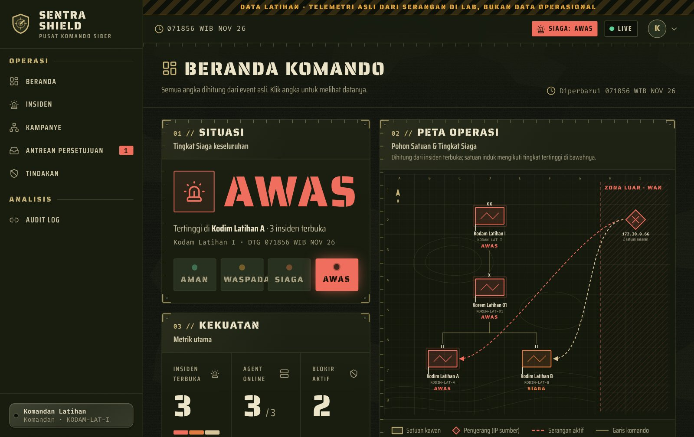
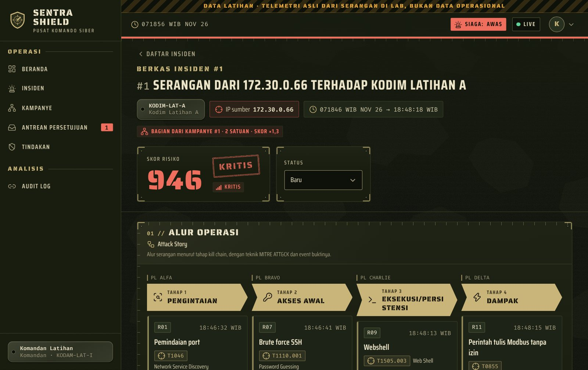
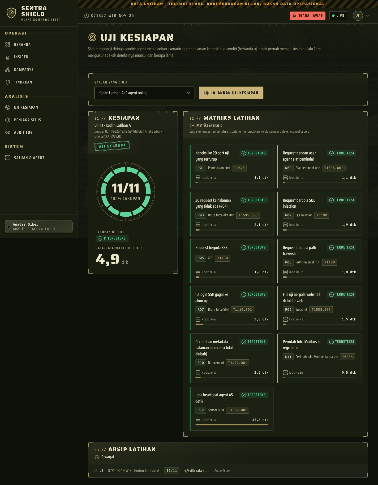
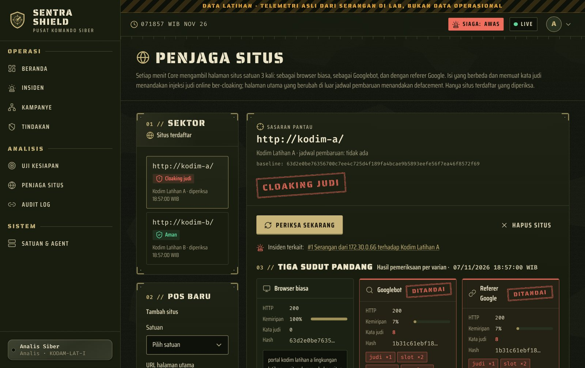
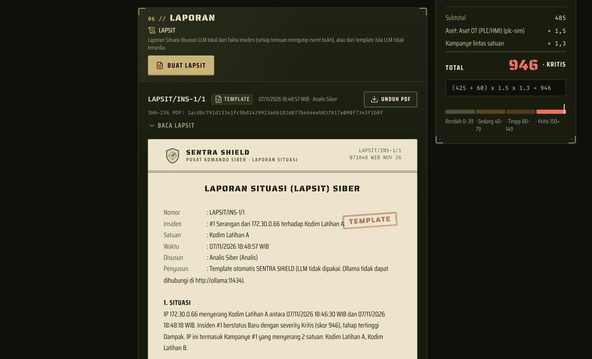
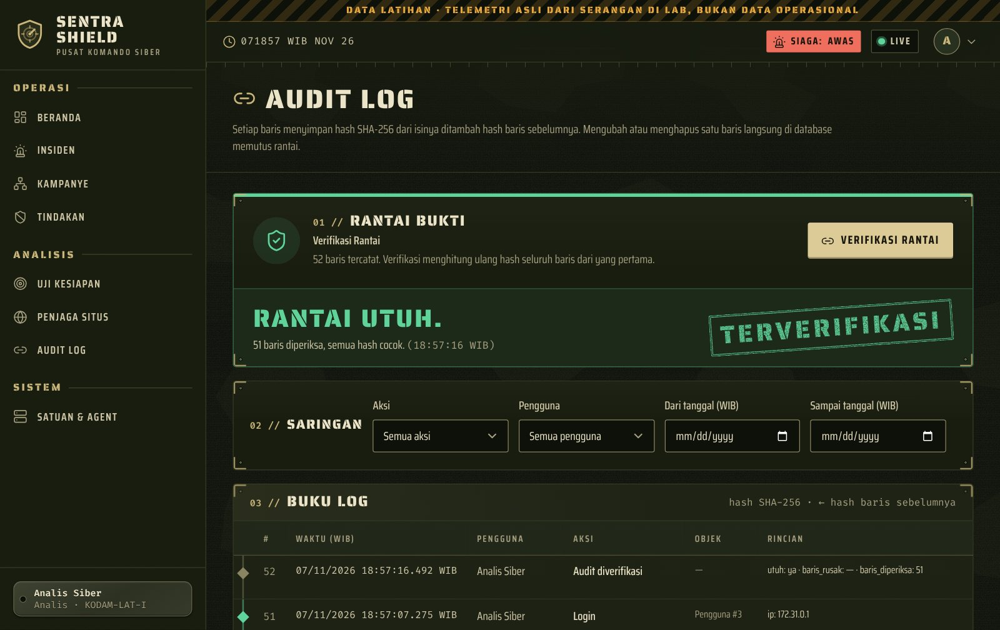
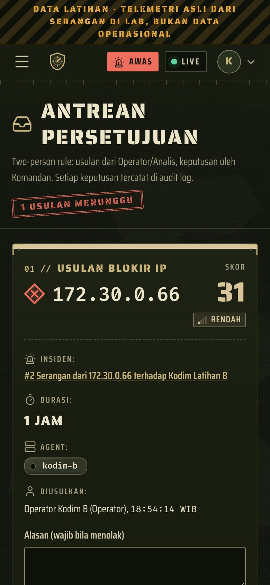
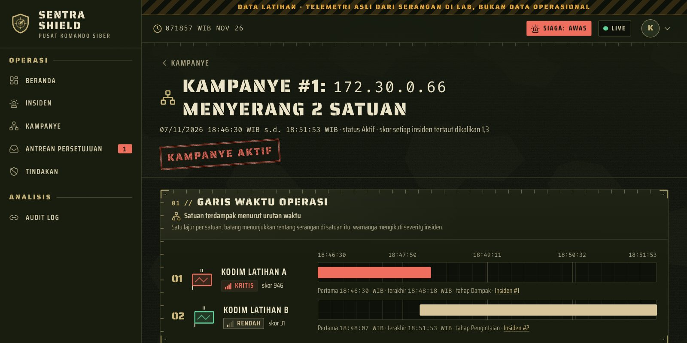

Sensor ringan di tiap satuan mengirim telemetri asli. Pusat merangkum ratusan event menjadi satu insiden yang bisa dijelaskan, lalu respons berjalan mengikuti rantai komando: Operator mengusulkan, Komandan menyetujui dari HP, dan agent memblokir penyerang di firewall.
Setiap deteksi berasal dari telemetri asli, dan blokir benar-benar memutus penyerang dari mesin terpisah. Tidak ada angka karangan di dashboard.
Sistem menguji dirinya sendiri (Uji Kesiapan) dan menampilkan cakupan deteksi serta waktu deteksi dalam angka.
Satu perintah untuk menyalakan seluruh lab. Berjalan penuh tanpa internet setelah image dan model diunduh sekali.
Sekitar 5 menit: serangan ke dua satuan, kampanye terkoordinasi, eksploitasi IT dan OT, persetujuan Komandan dari HP, Sensor Buta, dan Uji Kesiapan.
Satuan kecil butuh deteksi yang bisa ditindaklanjuti tanpa tim SOC penuh.
Tiga bagian: Agent di host tiap satuan, Core di pusat, dan Command (dashboard web, termasuk dari HP Komandan). Perintah ke agent hanya dari daftar tetap; tidak ada eksekusi perintah bebas.
Di layar kecil, geser diagram ke samping.
S = ( Σ bobot aturan unik + 20 × (T − 1) ) × maset × mkampanye
T = jumlah tahap kill chain. maset: OT 1,5 · server web 1,2 · lainnya 1,0. mkampanye = 1,3 bila IP yang sama menyerang beberapa satuan.
Contoh dari lab, insiden Kodim Latihan A: (425 + 20 × 3) × 1,5 × 1,3 = 946.
Tingkat Siaga satuan mengikuti insiden terbukanya yang paling berat; satuan induk mengikuti tingkat tertinggi di bawahnya.
Angka di bawah diukur dari lab latihan (serangan nyata dari container penyerang terpisah: nmap, hydra, sqlmap, unggah webshell, tulis Modbus, injeksi judi online).
skenario Uji Kesiapan terdeteksi (cakupan 100%)
rata-rata waktu deteksi pada Uji Kesiapan
dari Komandan menekan Setujui sampai penyerang terputus
dari event terjadi sampai tampil di dashboard (WebSocket)
dari ±970 event serangan ke Kodim A: 11 aturan, 4 tahap kill chain, skor 946 Kritis
insiden palsu dari event uji; rantai audit utuh setelah uji alur penuh
Diukur di lab pengembang dan laptop demo (Windows 11 + Docker Desktop/WSL2), 6–7 November 2026. Uji kernel laptop demo: log firewall NFLOG dan blokir nftables lulus 6/6.
Tangkapan layar asli dari lab setelah skenario serangan lengkap. Klik gambar untuk ukuran penuh.





[EV-n], PDF ber-hash SHA-256.

Operator atau Analis mengusulkan blokir dari Detail Insiden. Komandan menyetujui atau menolak dari HP, dengan alasan bila menolak. Tidak ada satu orang pun yang bisa sekaligus mengusulkan dan menyetujui (two-person rule). Setelah disetujui, agent memasang blokir di nftables dengan batas waktu, sehingga blokir terbuka sendiri walau pusat mati. Semua langkah tercatat di audit log berantai.

Semua fitur di bawah sudah berjalan dan diuji di lab.
Python pustaka standar: log web, SSH, firewall, FIM, Modbus pasif. Antrean lokal 10.000 event saat pusat putus.
Pola dan ambang (pemindaian, brute force, SQLi, XSS, LFI, webshell, defacement, Modbus, Sensor Buta, judi online).
Event dikorelasikan menjadi insiden per tahap kill chain; skor dengan rumus terbuka menentukan severity dan Tingkat Siaga.
WebSocket dengan cadangan polling 3 detik; Operator hanya melihat satuannya.
Usul, setuju dari HP, blokir nyata di firewall host; rollback dan kedaluwarsa otomatis.
11 skenario aman ke host sendiri, matriks hasil, cakupan, rata-rata waktu deteksi, riwayat.
Heartbeat hilang lebih dari 30 detik menjadi insiden Tinggi; sumber log rutin yang diam diberi peringatan.
IP sama di dua satuan atau lebih dalam 24 jam: skor ×1,3, blokir serentak.
SHA-256 tiap baris + hash sebelumnya; Verifikasi menunjukkan baris pertama yang rusak.
Prompt hanya fakta JSON, sitasi bukti divalidasi, cadangan template, PDF ber-hash.
Deteksi injeksi judi online ber-cloaking dan defacement halaman utama di luar jadwal pembaruan.
Butuh Docker (Docker Desktop di Windows), RAM kosong ±3 GB (tambah ±3 GB bila memakai LLM), dan port 8443. Internet hanya untuk unduhan pertama.
Ikuti panduan pemula di repo, lalu klik dua kali file di folder lab\windows:
mulai-lab.bat: menyalakan seluruh labjalankan-demo.bat: skenario demo bertahapcek-lab.bat, reset-lab.bat, matikan-lab.batgit clone -b claude/pensive-galileo-eow7qv https://github.com/zuliandwisaputra17-stack/SENTRA-SHIELD-Smart-Cyber-Threat-Detection-Monitoring-System.git
cd SENTRA-SHIELD-Smart-Cyber-Threat-Detection-Monitoring-System
docker compose -f lab/docker-compose.yml up -d --buildBuka https://localhost:8443, akun analis@sentra.lab / Latihan#2026. Akun demo@sentra.lab hanya bisa melihat.
SENTRA SHIELD adalah purwarupa yang berjalan end-to-end di lab dan belum diuji di jaringan produksi. Batasannya kami tulis terbuka.
| Jangka pendek | Mode Latihan (replay), impor IOC offline, protokol OT tambahan (S7comm, DNP3) |
|---|---|
| Jangka menengah | LAPSIT berjenjang Kodim → Kodam → Pusat, anomali berbasis baseline per satuan, integrasi firewall perimeter |
| Jangka panjang | Uji coba di satu satuan nyata bersama PUSSIBERAD, sertifikasi keamanan, agent untuk Windows |